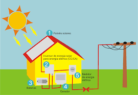
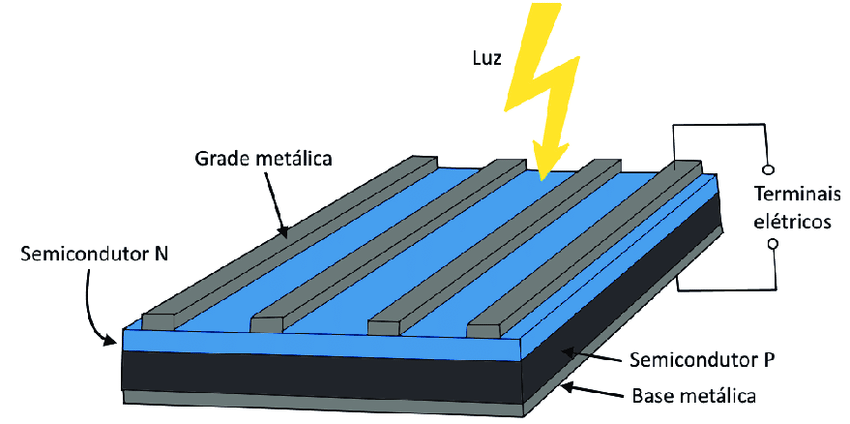

A eficiência da conversão luz/eletricidade de uma célula fotovoltaica é a proporção de energia de luz solar que a célula converte a energia elétrica. Isto é muito importante quando discutivos dispositivos fotovoltaicos, porque melhorando esta eficiência podemos fazer com que estes dispositivos tornem-se mais competitivos com as demais fontes de energia.. Naturalmente , se um painel solar eficiente pode prover tanta energia quanto dois painéis menos eficientes, então o custo daquela energia será reduzido. É óbvio que do outro lado desta equação está o dinheiro gasto para a fabricação.
Em uma célula fotovoltaica, os fótons são absorvidos pela parte "P" do semicondutor. É muito importante "afinarmos" o semicondutor tipo-p com as propriedades do fótons que irão entrar na célula afim de "livrar-mos" o máximo de elétrons possíveis. Outro desafio é impedir que os elétrons se encontrem com as lacunas e se recombinem antes deles "escaparem" da célula. Para impedir isto, projetamos o material de forma que os elétrons sejam "liberados" o mais próximo possível da junção, de forma que o campo elétrico possa ajudar a enviá-los para a parte tipo-p e para fora do circuito elétrico. Maximizando todas estar características, nós melhoramos a eficiência de conversão da cela de PV.
Para fazer uma célula solar eficiente, tentamos maximizar a absorção, minimizando a reflexão e recombinação, e assim maximizamos a condução.
